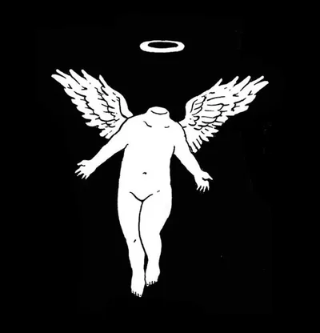
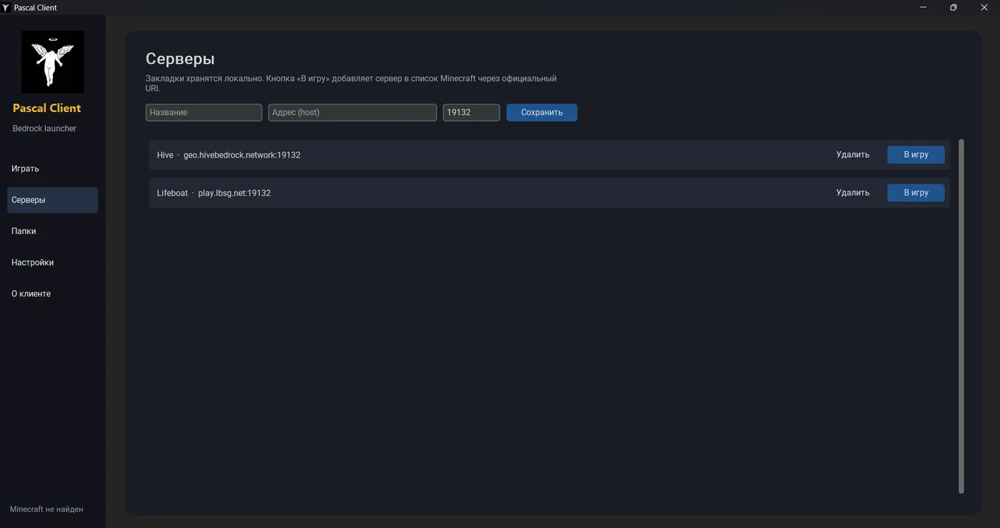
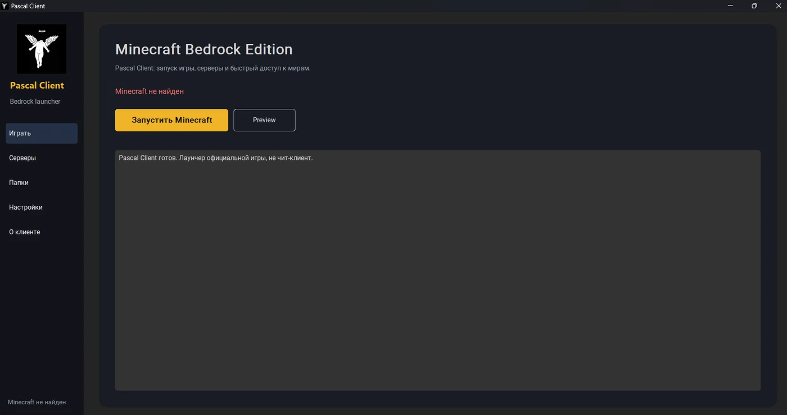
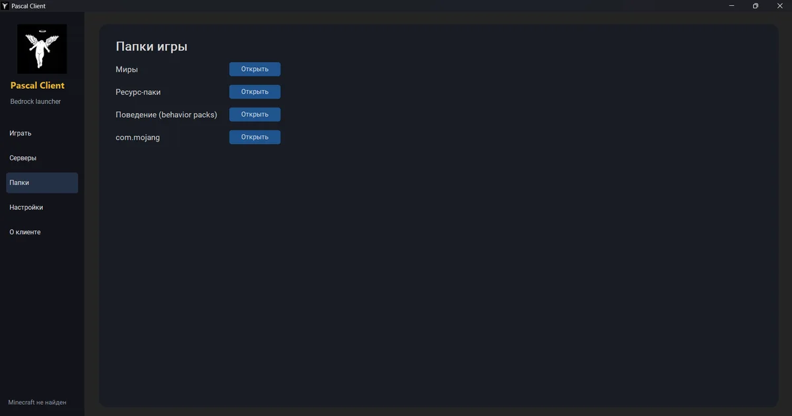
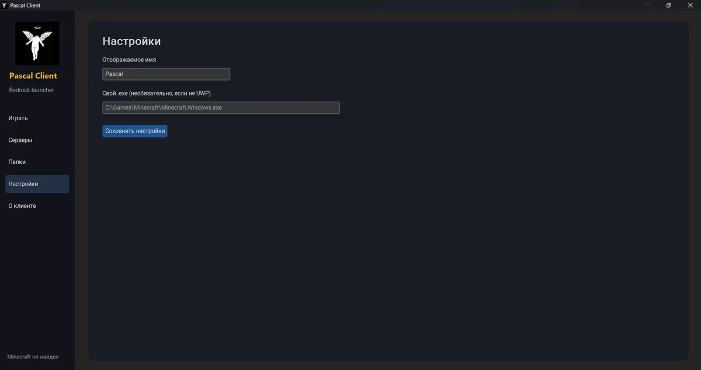

Pascal ClientЛаунчер для удобного запуска официального Minecraft Bedrock Edition на Windows. Серверы, папки игры и настройки в одном окне.
Не чит-клиент · Не обходит лицензию · Не модифицирует память игры

Всё, что нужно, чтобы быстро зайти в игру.
Запускай официальную игру одной кнопкой. Версия Preview тоже доступна.
Сохраняй адреса серверов локально. Кнопка «В игру» добавляет сервер в список Minecraft через официальный URI.
Миры, ресурс-паки, behavior packs и com.mojang открываются в один клик.
Своё отображаемое имя и путь к собственному .exe, если у тебя не UWP-версия.
Тёмный интерфейс с боковым меню и жёлтыми акцентами.



Pascal Client — лаунчер, а не чит-клиент. Он работает только с официальной копией игры.
Для работы нужна установленная копия Minecraft из Microsoft Store / Xbox.
Версия 0.1.0 · для Windows
Скачать для Windows